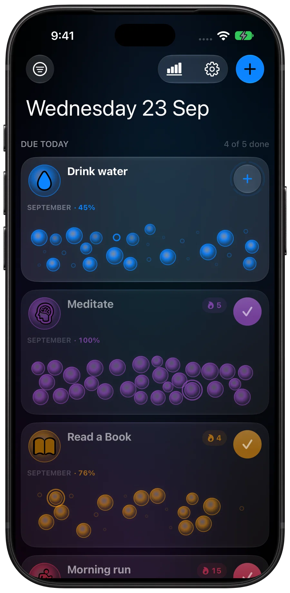
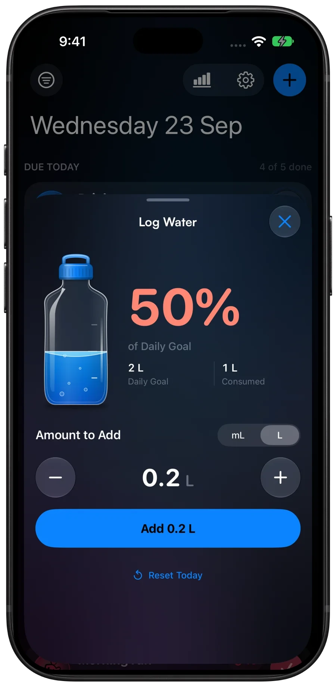
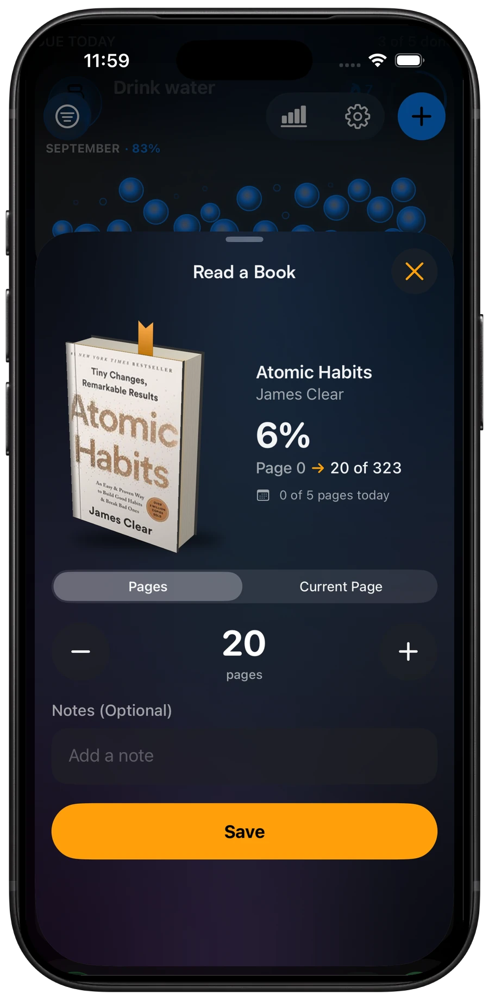
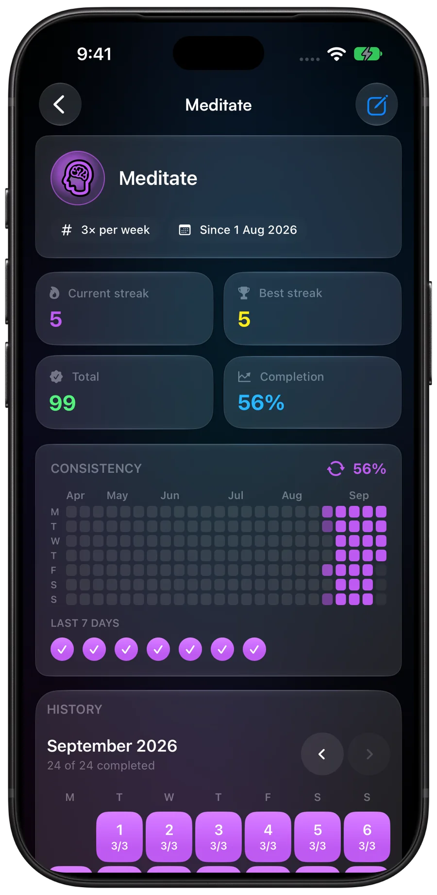
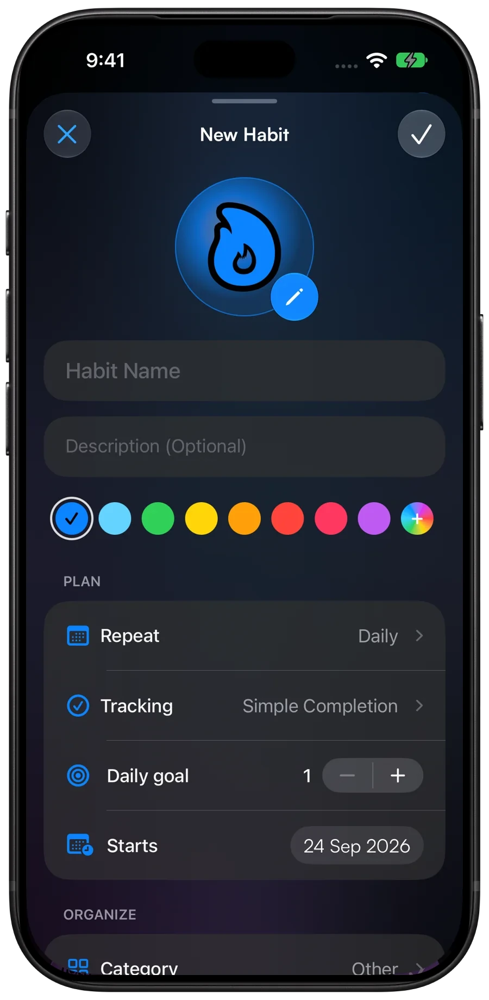
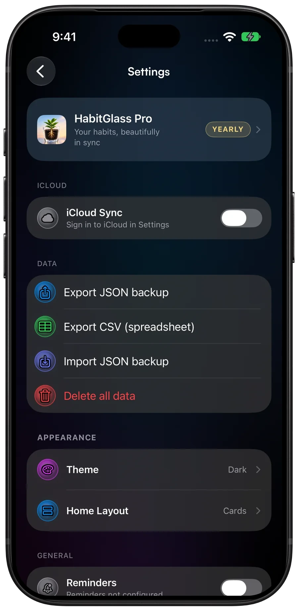
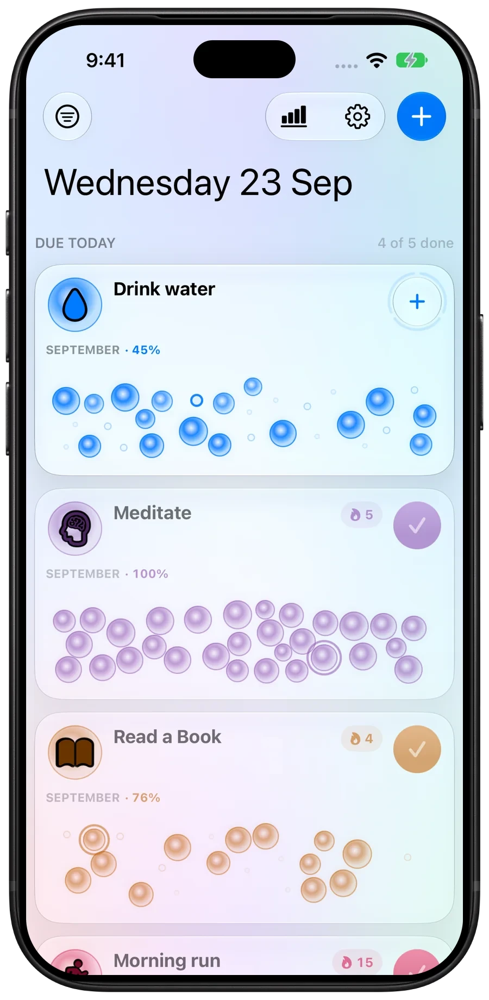

For iPhone, built on iOS 26 Liquid Glass
Your habits, as a constellation.
Every day you show up fills a glass bubble. A month of them becomes a picture you'd rather not leave half finished.
Free for three habits. No account.

The grid is the whole point.
Miss a day and the gap sits there in plain sight instead of hiding inside a chart. Tap a few days below. That's the app.
- Days done
- 0
- Best streak
- 0
- Rate
- 0%
September 2026
Nothing here is saved or sent.
Six screens you'll actually use.
Captured straight from the app. Scroll, and the phone follows along.
-
01
One tap, then get on with your day.
Today's list only shows what's due. Tick it off from the card, or log water and reading progress without leaving Home.
- A check button sized for a thumb, with haptics behind it
- Counters for habits you do more than once a day
- This month's completion rate on every card
-
02
Log a drink, watch the bottle rise.
Log Water puts your daily goal beside a bottle that fills as you go, in millilitres or litres. Nudge the amount by 50 mL before you add it.
How reminders split your water goal
-
03
Log pages, or just the minutes.
Read a Book keeps your current book and page in front of you, with a 3D copy and a bookmark that moves to where you'll finish. Log pages read, jump to your current page, or track minutes instead.
How pages and minutes count toward the day
-
04
A month you can read at a glance.
Open a habit for the numbers that matter, a consistency strip going back months, and a calendar you can tap to fix the day you forgot to log.
- Streaks follow the schedule, so a planned rest day doesn't break the chain
- Today gets a grace period instead of failing you at midnight
- Tap any day to backfill it or attach a note

-
05
Make it yours in about twenty seconds.
Pick an icon, pick a colour, tell it how often. Habits you want to build and habits you want to quit are the same three taps.
- Hundreds of icons, grouped so you can find one
- Thirteen tuned colours, or mix your own
- Every day, set weekdays, X times a week, or every N days

-
06
Your history, never held hostage.
Export everything to JSON and bring it back later, or pull a CSV into a spreadsheet. Archive a habit to retire it without losing what you built.
- Home Layout in cards, rows or tiles
- A delete-everything button that really deletes everything

One tick per reminder.
Set a daily goal and a reminder schedule, and HabitGlass splits the goal into one share per reminder. Tap through a day below.
Water
2,000 mL a day, with a reminder every hour from 7:30 am to 7:30 pm. That's 13 reminders, so each tick is about 160 mL.
0/13 0 of 2,000 mL
The last tick only fills at 2,000 mL. Then the day is done and the reminders stop.
Reading
30 pages a day with 6 reminders, so each tick is 5 pages. Prefer the clock? Set a minutes goal and pages become optional.
0/6 0 of 30 pages
A reading reminder opens the log so you can say how much you read. Nothing gets checked off for you.
Light and dark, both designed.
Not one palette inverted. Light has its own contrast-safe colour set, so a yellow habit is still readable on a pale background. Drag the line to compare.

Pro opens the rest.
Three habits, every schedule type, schedule-aware streaks and the month grid are free for good. Pro adds these.
-
Home Screen widgets
A bubble field or streak count, and you can check a habit off without opening the app.
-
Insights
A check-in calendar across every habit and a streak leaderboard, so you can see which one is slipping.
-
iCloud sync
Off by default. Switch it on and habits mirror through your own private iCloud database.
-
Reminders
One nudge per habit, at the time that suits that habit.
-
Daily goals
Set a target of three, eight or twelve, and the card fills as you tap.
-
Export and import
Full-fidelity JSON out and back in, plus CSV for spreadsheets.
-
Per-day notes
Tap a day in the grid and write down why it went well, or why it didn't.
-
Unlimited habits
As many as you like, grouped into your own categories.
Less than a coffee a month.
Start free. Subscribe when three habits isn't enough, or pay once and be done.
Free
A$0
Three habits, for as long as you want them.
- Up to three active habits
- Every schedule type
- Schedule-aware streaks
- Month grid and history
Pro yearly
A$19.99/ year
Or A$2.99 a month. Yearly saves 44%.
- Unlimited habits and categories
- Home Screen widgets
- Insights, reminders and iCloud sync
- Export, import and per-day notes
Pro lifetime
A$49.99once
Everything in Pro. No renewal, ever.
- Every Pro feature
- Restores on any iPhone with your Apple account
- No monthly or yearly renewal
Australian prices include GST. The App Store shows the price for your region before you buy.
There is no server holding your habits.
Not "we take privacy seriously". There's nowhere for your data to go: no account, no profile, no analytics SDK, no ad network.
Read the privacy policy-
Stored in a database on your phone So the app works in a tunnel, on a plane, or with the radios off.
-
One network call, and it isn't about you The app asks RevenueCat whether you've paid. That's the entire list.
-
iCloud sync is opt-in Switch it on and data mirrors to your own private iCloud database. I can't read it.
-
Tracking declared false, because it is The App Store privacy manifest lists no tracking and no data collection.
Fair questions.
Do I need an account?
Does it work offline?
Which iOS version do I need?
Is there an Android or web version?
Can I get my data out again?
Do I lose a streak on a rest day?
Can I switch from monthly to lifetime?
Something's broken. Who do I tell?
Day one is boring. Day thirty is the whole point.
Three habits are free. Open the app and tap.